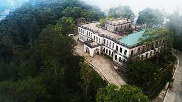
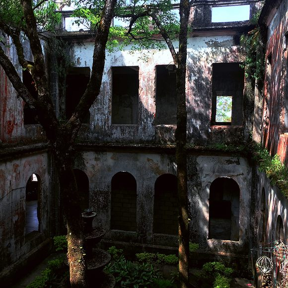
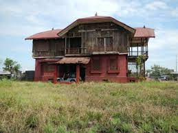
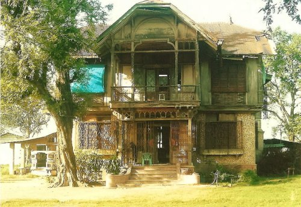
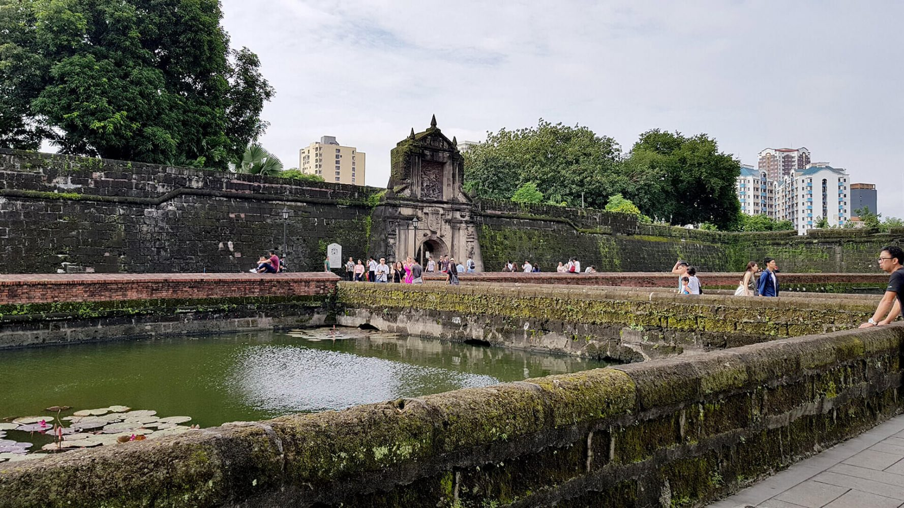
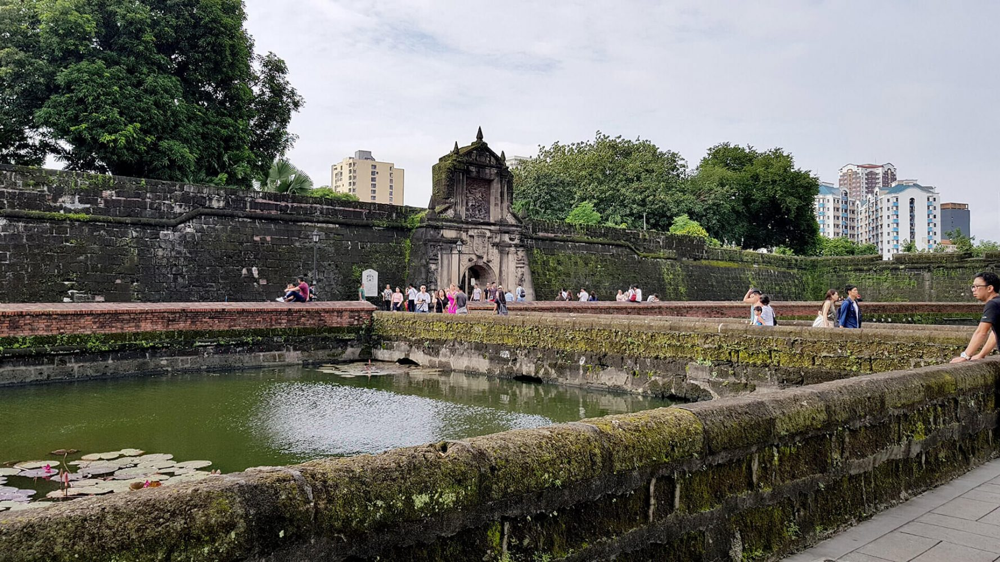
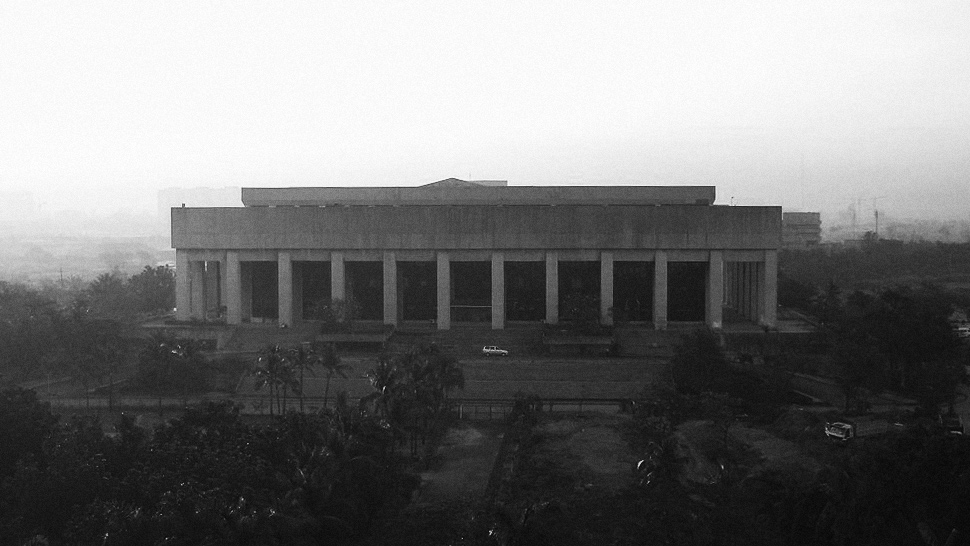
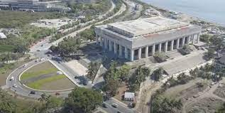

Diplomat Hotel
 
The Diplomat Hotel, located in Baguio City, Philippines, is notorious for its reputation as one of the most haunted places in the country.
Its dark history and eerie atmosphere have contributed to this haunted status.
The Diplomat Hotel was originally constructed in the early 20th century as a rest house for Dominican friars.
Later, during World War II, it was used as a refugee camp for displaced civilians, but the property was heavily damaged during the Japanese occupation.
After the war, the building was rebuilt and eventually became the Diplomat Hotel in the 1970s under the ownership of Tony Agpaoa.
However, the hotel's history takes a tragic turn during this period. It's said that during the Japanese occupation,
many innocent civilians were brutally killed on the hotel grounds. Additionally,
rumors suggest that the property may have been used as a place for nuns and priests to hide during the war, further adding to its eerie history.
Tony Agpaoa, who claimed to have had supernatural experiences himself, turned the hotel into a rest house and later a hotel.
He was known for his eccentric behavior and reportedly had a fascination with the occult.
He filled the property with crosses, religious statues, and religious symbols, believing they would protect him from the spirits he felt haunted the place.
The tragic history of the Diplomat Hotel, combined with Agpaoa's fascination with the supernatural, contributed to a chilling atmosphere.
Stories of ghostly apparitions, strange noises, and unsettling encounters began to circulate among guests and staff.
Many reported experiencing paranormal phenomena, such as hearing voices, footsteps, and witnessing objects moving on their own.
In 1987, Tony Agpaoa died under mysterious circumstances at the hotel, adding another layer of intrigue to the property's dark history.
After his death, the Diplomat Hotel fell into disrepair, and it was eventually closed to the public.
Despite its closure, the hotel's haunted reputation continued to grow,
attracting thrill-seekers and paranormal enthusiasts who wanted to experience the supernatural phenomena for themselves.
Today, the Diplomat Hotel remains abandoned and in a state of decay. It has become a popular destination for ghost hunters,
urban explorers, and those intrigued by its haunted history. The combination of wartime tragedy, Tony Agpaoa's fascination with the occult,
and the reported paranormal activity has solidified the Diplomat Hotel's status as one of the most haunted places in the Philippines, perpetuating its chilling reputation for generations to come.
Have you visited Diplomat Hotel before ?? Yes
Bahayna Pula
 
Bahay na Pula, or the "Red House," is considered a haunted house in the Philippines because of its chilling history.
This historic mansion, located in San Ildefonso, Bulacan, has a reputation for being a place where eerie things happen.
The mansion was built during the Spanish colonial period and served as a residence for Don Lorenzo del Rosario.
It's a striking red-brick building with a grand design.
However, what makes Bahay na Pula spooky is its connection to important events in Philippine history.
During the late 1800s, it was rumored to have been a secret meeting place for Filipino revolutionaries who were fighting for independence
from Spanish rule. The house was used for planning strategies and discussions.
Things took a dark turn during the Philippine-American War (1899-1902). American forces used the mansion as their headquarters and clashed with
Filipino fighters in the area. The house witnessed violence and suffering during this time, leading to tales of brutality.
Because of its association with these tumultuous events, people believe that Bahay na Pula is haunted.
Visitors have reported ghostly sightings, strange sounds, and eerie happenings.
It is said that the spirits of those who suffered and died during these difficult times still linger within the mansion.
Bahay na Pula's haunting reputation attracts the curious and those interested in the supernatural.
While not everyone may believe in ghosts, the mansion serves as a reminder of the Philippines' struggle for independence and the dark history of the region.
Its eerie past continues to captivate imaginations and pique interest, making it a well-known haunted house in the country.
Have you visited Bahayna Pula before ?? Yes
Fort Santiago, Intramuros (Manila)
 

Fort Santiago, Intramuros (Manila) is one of the most haunted places in the Philippines
because of its long and bloody history. Built by the Spanish conquistadors in the 16th century,
the fort has been the site of numerous battles, executions, and imprisonments.
During the Spanish colonial period, Fort Santiago was used as a prison for those who
were suspected of being disloyal to the Spanish Crown. Many of these prisoners were tortured
and executed within the fort's walls. During World War II, the fort was used by the Japanese as a prison camp
for American and Filipino prisoners of war. Thousands of these prisoners died from malnutrition, disease, and torture.
It is no wonder that Fort Santiago is said to be haunted by the ghosts of those who died there.
Visitors to the fort have reported seeing apparitions, hearing strange noises, and feeling cold spots.
Some of the most common paranormal phenomena reported at Fort Santiago include:
* The ghost of Jose Rizal, the Philippine national hero, who was imprisoned and executed at the fort in 1896.
* The ghosts of the prisoners who were tortured and executed by the Spanish and Japanese.
* The ghosts of the American and Filipino prisoners of war who died in the fort's prison camp.
* The ghost of a young woman who is said to have been raped and murdered by a Japanese soldier during World War II.
Fort Santiago is a popular tourist destination, but it is also a place where many people have experienced paranormal activity.
Have you visited Fort Santiago, Intramuros (Manila) before ?? Yes
Manila Film Center (Pasay City)
 
The Manila Film Center in Pasay City, Philippines is one of the most haunted places in the country due to a
tragic accident that occurred during its construction in 1981.On November 17, 1981, scaffolding collapsed
during the construction of the fourth floor of the building, sending workers down to be entombed in the quick-drying cement.
At least 169 workers died in the accident, and many believe that their ghosts still haunt the building.
Witnesses have reported seeing ghostly figures of construction workers walking around the building,
and hearing their voices and screams. Some have also reported hearing the sound of metal clanging and
tools being used, even though the building is abandoned and no construction is taking place.
Another reason why the Manila Film Center is considered to be haunted is because of the alleged
mistreatment of the workers' bodies after the accident. It is said that the Marcos regime ordered the workers' bodies
to be buried in the rubble of the building in order to meet the deadline for the completion of the building.
This alleged mistreatment of the workers' bodies is said to have angered their spirits, and many believe that they
are now trapped in the building, unable to move on to the afterlife.
The Manila Film Center has been the subject of numerous paranormal investigations, and many investigators have claimed to
have experienced strange and unexplained phenomena while inside the building.
Have you visited Manila Film Center (Pasay City) before ?? Yes
Balete Drive (Quezon City)
Balete Drive is one of the most haunted places in the Philippines, according to popular belief.
It is a major residential avenue in the eastern part of New Manila, Quezon City, and is named
after the ancient balete tree that stood prominently along its route. Balete trees are believed
to be the dwelling place of various spirits in Philippine folklore. There are many different versions
of the legend of the White Lady of Balete Drive, but the most common version is that she is the ghost of a
teenage girl who was raped and killed by a taxi driver in the 1950s. Her body was said to have been buried under
the balete tree,and her ghost has been haunting the area ever since.Witnesses have reported seeing the White
Lady of Balete Drive at night, dressed in a long white gown and walking along the side of the road.
She is said to flag down taxi drivers and then disappear into the back seat. Some taxi drivers have claimed
to have been driven around for hours by the White Lady, only to find themselves back at the beginning of Balete Drive when they finally stop.
Have you visited Balete Drive (Quezon City) before ?? Yes